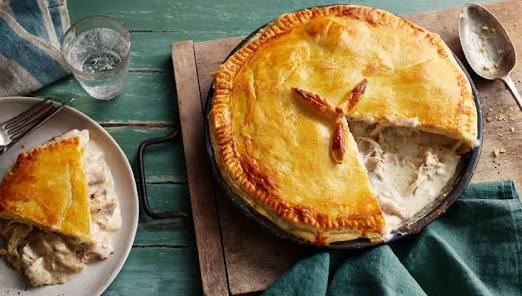

chickenpie

Chicken pie is a comforting dish made with tender chicken, vegetables, and a creamy sauce,
all wrapped in a golden, flaky pastry crust. It's a delicious and satisfying meal that's perfect for lunch or dinner.
Ingredients
- 2 pie crusts
- 2 cups cooked chicken, shredded
- 1 cup mixed vegetables (peas and carrots)
- 1 small onion, chopped
- 2 cloves garlic, minced
- 2 tablespoons butter
- 2 tablespoons flour
- 1 cup chicken broth
- 1/2 cup milk
- Salt
- Black pepper
- 1 egg (for egg wash, optional)
Steps
- Preheat the oven to 400°F (200°C).
- Melt the butter in a pan and cook the onion and garlic until soft.
- Stir in the flour and cook for 1 minute.
- Gradually add the chicken broth and milk, stirring until the sauce thickens.
- Add the shredded chicken, mixed vegetables, salt, and pepper. Mix well.
- Place one pie crust into a pie dish.
- Pour the chicken filling into the crust.
- Cover with the second pie crust and seal the edges.
- Cut a few small slits in the top crust to let steam escape.
- Brush the top with beaten egg if desired.
- Bake for 35–40 minutes, until the crust is golden brown.
- Let the pie cool for 10 minutes before serving.
Home